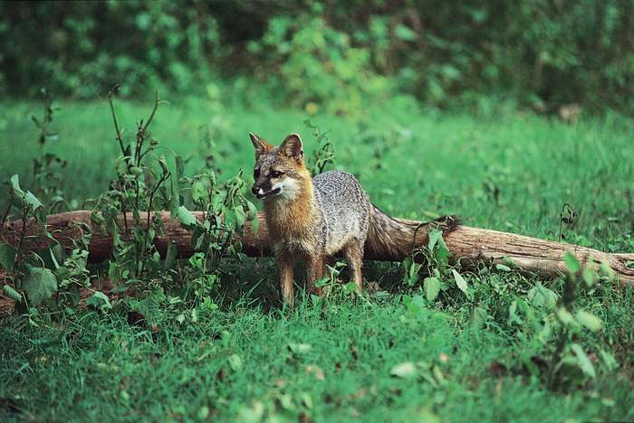

Dog, (Canis lupus familiaris), domestic mammal of the family Canidae (order Carnivora). It is a subspecies of the gray wolf (Canis lupus) and is related to foxes and jackals. The dog is one of the two most ubiquitous and most popular domestic animals in the world (the cat is the other). For more than 12,000 years it has lived with humans as a hunting companion, protector, object of scorn or adoration, and friend.The dog evolved from the gray wolf into more than 400 distinct breeds. Human beings have played a major role in creating dogs that fulfill distinct societal needs. Through the most rudimentary form of genetic engineering, dogs were bred to accentuate instincts that were evident from their earliest encounters with humans. Although details about the evolution of dogs are uncertain, the first dogs were hunters with keen senses of sight and smell. Humans developed these instincts and created new breeds as need or desire arose.

Dogs are regarded differently in different parts of the world. Characteristics of loyalty, friendship, protectiveness, and affection have earned dogs an important position in Western society, and in the United States and Europe the care and feeding of dogs has become a multibillion-dollar business. Western civilization has given the relationship between human and dog great importance, but, in some of the developing nations and in many areas of Asia, dogs are not held in the same esteem.
In some areas of the world, dogs are used as guards or beasts of burden or even for food, whereas in the United States and Europe dogs are protected and admired. In ancient Egypt during the days of the pharaohs, dogs were considered to be sacred.Dogs have played an important role in the history of human civilization and were among the first domesticated animals. They were important in hunter-gatherer societies as hunting allies and bodyguards against predators. When livestock were domesticated about 7,000 to 9,000 years ago, dogs served as herders and guardians of sheep, goats, and cattle. Although many still serve in these capacities, dogs are increasingly used for social purposes and companionship. Today dogs are employed as guides for the blind and disabled or for police work. Dogs are even used in therapy in nursing homes and hospitals to encourage patients toward recovery. Humans have bred a wide range of different dogs adapted to serve a variety of functions. This has been enhanced by improvements in veterinary care and animal husbandry.
Paleontologists and archaeologists have determined that about 60 million years ago a small mammal, rather like a weasel, lived in the environs of what are now parts of Asia. It is called Miacis, the genus that became the ancestor of the animals known today as canids: dogs, jackals, wolves, and foxes. Miacis did not leave direct descendants, but doglike canids evolved from it. By about 30 to 40 million years ago Miacis had evolved into the first true dog—namely, Cynodictis. This was a medium-size animal, longer than it was tall, with a long tail and a fairly brushy coat. Over the millennia Cynodictis gave rise to two branches, one in Africa and the other in Eurasia. The Eurasian branch was called Tomarctus and is the progenitor of wolves, dogs, and foxes.
The timing and location of dog domestication is less clear and has been a matter of significant debate, but there is strong genetic evidence that the first domestication events occurred somewhere in Central Asia before 15,000 years ago. Some genetic studies have suggested that wolves were domesticated 16,300 years ago to serve as livestock in China. Other genetic studies, however, have suggested that dog domestication began as early as 18,800–32,100 years ago in Europe or that early dogs dating from about 12,000 to 14,000 years ago came from a small strain of gray wolf that inhabited what is now India. Thereafter this wolf—known as Canis lupus pallipes—was widely distributed throughout Europe, Asia, and North America. However, one genetic study that compared the DNA of dogs and wolves inhabiting areas thought to have been centres of dog domestication suggests that dogs and modern wolves belong to separate lineages that share a common ancestor. It is also possible that some of the dogs of today descended not from the wolf but rather from the jackal. These dogs, found in Africa, might have given rise to some of the present native African breeds. A genetic study examining the migration of dogs to the Americas revealed evidence that dogs did not accompany the first humans to the New World more than 15,000 years ago; the study suggested that dogs came to the Americas only 10,000 years ago.
No matter what their origins, all canids have certain common characteristics. They are mammals that bear live young. The females have mammary glands, and they suckle their offspring. The early breeds had erect ears and pointed or wedge-shaped muzzles, similar to the northern breeds common today. Most of the carnivores have similar dental structures, which is one way paleontologists have been able to identify them. They develop two sets of teeth, deciduous (“baby”) teeth and permanent teeth. Canids walk on their toes, in contrast to an animal like the bear, which is flat-footed and walks on its heels. Dogs, like most mammals, have body hair and are homeothermic—that is to say, they have an internal thermostat that permits them to maintain their body temperature at a constant level despite the outside temperature. Fossil remains suggest that five distinct types of dogs existed by the beginning of the Bronze Age (about 4500 BCE). They were the mastiffs, wolf-type dogs, sight hounds (such as the Saluki or greyhound), pointing dogs, and herding dogs
It is likely that wild canidsa were scavengers near tribal campsites at the same time that ancient humans discovered a hunting partner in the animals that ventured close by. In ancient Egypt, dogs were thought to possess godlike characteristics. They were pampered by their own servants, outfitted with jeweled collars, and fed the choicest diet. Only royalty was permitted to own purebred dogs, and upon the death of a ruler his favourite dog was often interred with him to protect him from harm in the afterlife.
Illustrations of dogs dating from the Bronze Age have been found on walls, tombs, and scrolls throughout Europe, the Middle East, and North America. Often the dogs are depicted hunting game with their human counterparts. Statues of dogs guard the entrances to burial crypts. In many cases these dogs clearly resemble modern canines. Such relics are indelible testimony to the importance that humans have given to the dog throughout the ages.
Once it became evident that dogs were faster and stronger and could see and hear better than humans, those specimens exhibiting these qualities were interbred to enhance such attributes. Fleet-footed sight hounds were revered by noblemen in the Middle East, while in Europe powerful dogs such as the mastiff were developed to protect home and traveler from harm.brAs society changed and agriculture—in addition to hunting—became a means of sustaining life, other breeds of dogs were developed. Herding and guarding dogs were important to farmers for protecting their flocks. At the same time, small breeds became desirable as playthings and companions for noble families. The Pekingese in China and fragile breeds such as the Chihuahua were bred to be lapdogs. The terrier breeds were developed, mainly in England, to rid granaries and barns of rodents. Pointing and retrieving breeds were selected for special tasks related to aiding the hunter to find and capture game. Many breeds are extremely ancient, while others have been developed as recently as the 1800s.
Dogs come in a wide range of shapes and sizes. It is difficult to imagine that a large Great Dane and a tiny poodle are of the same species, but they are genetically identical with the same anatomic features. All dogs have 78 chromosomes, or 39 pairs of chromosomes (humans have 23 pairs), and one member of each pair comes from each parent. The normal temperature (rectal) of an adult dog is 100–102.5 °F.
Dogs have two sets of teeth. Twenty-eight deciduous teeth erupt by six to eight weeks of age, and by the time puppies are six to seven months old these deciduous teeth are all replaced by 42 adult teeth. The permanent teeth include incisors, which are used to nip and bite; canines, which tear and shred flesh; and premolars and molars, which shear and crush. In short, a dog’s teeth serve as weapons and as tools for cutting or tearing food. The canines are the upper and lower fangs for which the dog family was named. As in most carnivores, the teeth are high-crowned and pointed, unlike the broad, grinding teeth of many herbivorous animals.
Dogs rarely chew their food. Once the food is taken into the mouth, it is gulped or swallowed and passed through the esophagus into the stomach, where digestive enzymes begin to break it down. Most of the digestion and absorption of food takes place in the small intestines with the aid of the pancreas and the liver. The pancreas secretes enzymes needed for regulating the digestive process. As in humans, the pancreas produces insulin and glucagon, both of which are necessary for the regulation of glucose. The liver is the largest internal organ in the body. It has six lobes (whereas the human liver has only two). The liver is responsible for many essential life-preserving functions. It helps digestion by producing bile, which aids in the absorption of fat. The liver also metabolizes protein and carbohydrates, and it excretes toxins from the bloodstream. In addition, it manufactures major blood-clotting agents. Because the liver performs all these vital functions, liver disease can be a major problem in dogs. The skeletal frame of the dog consists of 319 bones. If a dog’s tail is docked or absent at birth, there obviously are fewer bones in the skeleton. The muscles and tendons of a dog are similar to those of a human; however, a dog’s upper body muscles bear half the weight of the entire body and are better developed than a human’s. The weight distribution between the front and the rear of the dog are relatively equal.
Other breeds also have unique features. The Afghan hound was bred to chase game over long distances in rocky terrain. Its structure permits great flexibility through the hip joints and lower back, enabling the dog to turn quickly in a small area. The dachshund, by contrast, is long and low with short legs. This dog was bred to hunt badgers underground, and its shape allows it to enter subterranean tunnels in search of its prey.
Although most breeds no longer follow the pursuits for which they were originally bred, their instincts remain strong, and their structure still allows them to perform their specific tasks.
Dogs have the same five senses as humans. However, some are more highly developed, and others are deficient compared with those of humans. Dogs’ sense of smell is by far the most acute and is immeasurably better than that of humans. Dogs are used for such tasks as tracking missing persons, digging underground, and tracing toxic substances, such as gases, that are undetectable by humans. Dogs can detect drugs, explosives, and the scents of their masters. Not all canine noses are the same, however. Some breeds, such as the German shepherd and the bloodhound, have much more keenly developed olfactory senses than others. One would not choose a short-nosed breed, such as the pug, to engage in tracking.
Even in short-nosed breeds, however, the olfactory centre is relatively highly developed. It is arranged in folds in order to filter smells from the incoming air. Some rescue dogs are trained to follow a scent on the ground, and others are trained to scent the air. Both are able to distinguish one person from another even after a considerable passage of time. Hunting dogs—such as pointers, retrievers, and spaniels—are trained to scent birds and can distinguish one variety of bird from another. The dog’s sense of taste is poorly developed compared with that of humans. If forced to live on their own, dogs will eat almost anything without much discrimination.
There are three basic types of hair: short (as on a pointer or Doberman pinscher), medium (as on an Irish setter or Siberian husky), and long (as on a chow chow or Maltese). Within these categories there are also coarse and fine types of hair. Dogs come in a wide variety of colours, but in many breeds colour selection is an important consideration, as is the colour distribution on the dog.
Most dogs shed their coats seasonally. This is a natural occurrence that depends in large measure on the amount of available daylight. In the fall as days become shorter, a dog’s coat will grow thicker and longer. In the spring the dog will begin to shed its coat, and it will take longer for the coat to grow in over the summer. Temperature influences the amount of body coat a dog grows. Dogs living in warm climates all year long rarely grow hair coats as thick as those living in colder areas, although this will affect the body coat and the amount of protective undercoat more than the topcoat or the length of furnishings on the belly, ears, and tail.
There is some variation in the age at which dogs reach sexual maturity. Small breeds appear to mature faster than large ones, which usually cycle later. It is not uncommon for large-breed females to come into heat for the first time at more than 1 year of age, although 8 to 9 months is the norm. Dogs are sexually mature between 6 months and 1 year but are not socially mature until they are about 2 years of age. Females first cycle anywhere from 6 to 18 months of age and approximately twice a year thereafter. The only exception is the African basenji, which cycles annually, bearing one litter a year.
Puppies learn by watching, but their instincts guide how readily they will learn certain basic requirements. A dog bred to guard the home will be less likely to run off following a scent than a bird dog bred to hunt game. On the other hand, a guarding breed will need direction concerning who is “acceptable” and who is not, whereas a retriever will befriend everyone. Knowledge of what a dog was bred to do is useful when trying to train it to be an acceptable companion.
There are many theories about how to train a dog to be a happy and willing companion, but certain principles apply to all methods. The dog must understand what is expected. It has to be praised for doing well. Punishment for an infraction should be immediate and appropriate to the act. The dog must be able to associate the punishment with the crime. Consistency and kindness bring the best results in training. Most dogs will accept domination readily, but there are some, usually males, who will challenge that authority. This is dangerous behaviour and must be stopped at an early age. Good training must be sensible, and commands should be enforceable.
Dogs need regular care from the time they are born. In addition to a balanced diet, grooming is an important part of maintaining good health. Care of the ears, coat, and nails on a weekly basis gives owners an opportunity to examine their pets and to spot any potential illness. Ears should be cleaned regularly and nails kept trimmed. Brushing should be part of a dog’s weekly or even daily routine. Dogs with long or thick coats will need more frequent brushing than shorthaired varieties in order to loosen dead hair and prevent skin irritations or infection.
Fleas and ticks are sources of irritation and disease in every climate of the world (with the possible exception of the Arctic). Regular bathing and grooming helps to keep these and other external parasites under control. Treatment of the animal and its environment are essential to eliminate these pests. In some areas this is a yearlong process, whereas in other climates it is a seasonal problem. Internal parasites are a common cause of sickness, especially in puppies. There are many kinds of worms that invade the intestinal tract, resulting in listlessness, loss of blood and subsequent anemia, poor hair coat, and occasionally death. Many of these parasites are found in dirt and are ingested or get into the bloodstream through the skin of the dog. Effective veterinary remedies are available for the animal, but it is important to determine through fecal examination or blood tests exactly what type of parasite is present. Puppies should be examined about every three months, and adults need to be examined annually.